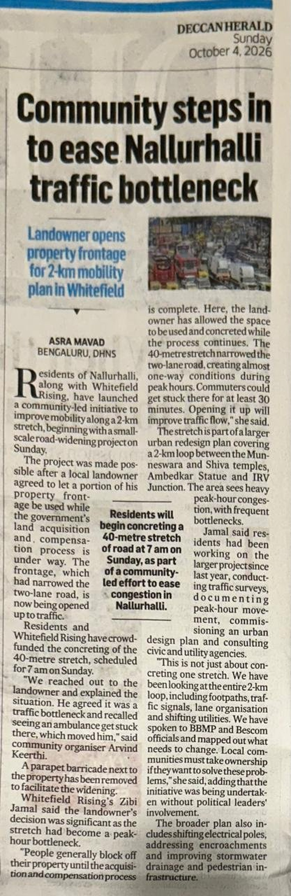

Evidence & Citations
Press Coverage & Verified Sources
Every fact, timeline milestone, and quote presented on this platform is backed by published media coverage and public civic documentation.
Citizens get private land for road widening; Nallurhalli traffic to ease in Bengaluru
Covers the 1-year negotiation, landowner agreement retaining title, ₹4 lakh crowdfunding, and 2-week curing period.
Bengaluru: Community steps in to ease Nallurhalli traffic bottleneck
Detailed report by Asra Mavad covering the Sunday 7 AM concreting, the removal of the stone parapet, and future needs (footpaths, BESCOM poles).
Bengaluru residents resolve Nallurhalli Road bottleneck through crowdfunding
Highlights the role of Whitefield Rising, local donors, and community volunteers in the 40m widening.
Bengaluru: Nallurhalli traffic bottleneck gets community fix
Chronicles the Revised Master Plan road widening status and past traffic police interventions.
Public Announcement: 2 km Loop Initiative on New Temple Road
Official announcement thread outlining the 2 km loop map, mobilization call, and Sunday morning pour.
15-minute neighbourhood potential solution: Nallurhalli Pilot
Urban planning study by Jana Urban Space Foundation & Mercedes-Benz R&D identifying Nallurhalli mobility gaps.
Bengaluru: Residents of Siddapura-Nallurhalli hit streets with a truckload of complaints
Historical coverage of over 200 residents marching to demand urgent road and pedestrian safety upgrades.

Deccan Herald Print Coverage · Oct 4, 2026
Connect With Us
Join the neighbourhood group on WhatsApp for community dialogue and updates.
Join the WhatsApp Group